MYSORE PALACE
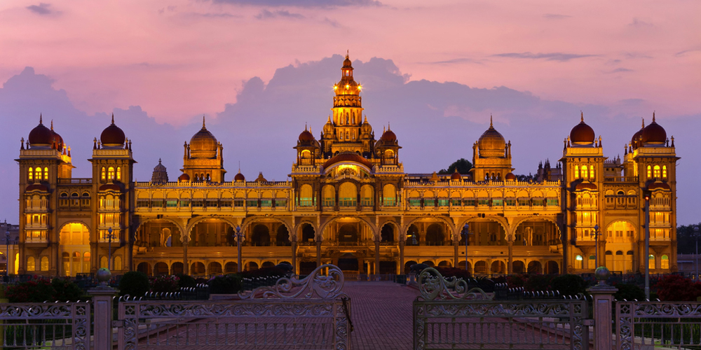Once the royal abode of a number of rulers, the Mysore Palace is now a museum that has all the royal pictures, clothing and artefacts of the Wodeyar dynasty. This palace is one of the most historical places in India and is frequently visited by several tourists. The palace was built and refined by several emperors throughout the years and is thus an amalgamation of Hindu, Rajput, and Mughal styles making it one of the heritage destinations in India. Glazed tiles, chandeliers, and iron pillars adorn the pavilion inside the temple that is used to host royal weddings.
Ambavilas Palace, otherwise known as the Mysore Palace, is a historical palace and a royal residence at Mysore in the southern Karnataka state of India. It is the official residence of the Wadiyar dynasty and the seat of the Kingdom of Mysore. The palace is in the centre of Mysore, and faces the Chamundi Hills eastward. Mysore is commonly described as the 'City of Palaces', and there are seven palaces including this one; however, 'Mysore Palace' refers specifically to this one within the Old Fort.
The land on which the palace now stands was originally known as puragiri (literally, citadel), and is now known as the Old Fort. Yaduraya built the first palace inside the Old Fort in the 14th century, which was demolished and constructed multiple times. The current structure was constructed between 1897 and 1912, after the Old Palace was burnt ablaze.
Mysore Palace is now one of the most famous tourist attractions in India, after the Taj Mahal, with more than 6 million annual visitors.
Construction
The last palace, now known as the Old Palace or the Wooden Palace, was burnt into ashes during the 1896 Dasara festivities. Maharaja Krishnaraja Wodeyar IV and his mother Maharani Kempananjammanni Devi, commissioned the British architect Lord Henry Irwin to build a new palace. Meanwhile, the royal family stayed in the closeby Jaganmohan Palace. The construction was overseen by B. P. Raghavulu Naidu, an executive engineer in the Mysore Palace division. He had conducted elaborate architectural studies during visits to Delhi, Madras, and Calcutta, and these were used in planning for the new palace. The construction cost was placed at Rs 41,47,913 (around $4 millions adjusted to inflation) and was completed in 1912.
The palace was further expanded in around 1940 (including the addition of the present Public Durbar Hall wing) during the reign of Maharaja Jayachamarajendra Wadiyar. Although the construction was completed in 1912, the fort continued to be beautified and its inhabitants were slowly moved to the newer extensions built off the palace.
Architecture
The architectural style of domes of the palace is commonly described as Indo-Saracenic, with blends of the Hindu, Mughal, Rajput, and Gothic styles. It is a three-story stone structure with marble domes, and has a 145-foot five-story tower. The palace is surrounded by a large garden. The entrance gate and arch hold the emblem and coat of arms of the kingdom of Mysore, around which is written the kingdom's motto in Sanskrit: "न बिभॆति कदाचन" (never terrified).
The main complex is 245 Ft in length and 156 Ft in width. There are fire extinguishing machines located in all parts of the palace in order to prevent any fires. The palace has three entrances: the East Gate (the front gate, opened only during the Dasara and for dignitaries), the South Entrance (for public), and the West Entrance (usually opened only during the Dasara). In addition, there are numerous secret tunnels from the palace cellar leading to Srirangapatna, other palaces, and confidential areas.
The three-story stone building of fine grey granite with deep pink marble domes has a facade with several expansive arches and two smaller ones flanking the central arch, which is supported by tall pillars. Above the central arch is a sculpture of Gajalakshmi, the Goddess of wealth, prosperity, fortune, and abundance with her elephants. There are three major exclusive temple buildings within the Old Fort, and about 18 inside the palace heart building. The palace was built adjacent to the even older Parakala Mutt headquarters, whose leaders have remained the rajagurus (royal teacher and guide) of Mysore kings. The kings of Mysore were devotees of Goddess Chamundi, hence the palace's facing the Chamundi Hills.
The palace houses two durbar halls (ceremonial meeting halls of the royal court) and incorporates an array of courtyards, gardens, and buildings.
Visitor information
The palace is 1.8 km (1.12 miles) from the central railway station to its west, 1.4 km (roughly 0.8 miles) from suburb bus-stand to its north-east, and 9.5 km (around 6 miles) from Mysore Airport, and in a small portion in its backyard is the city bus stand. The domestic airport is directly connected to the international airports of Bangalore, Chennai, Trivandrum, Hyderabad, Mangalore, and Bombay. The city is connected through the state highway SH-17.
The Palace Light Illumination is on Sundays and all public holidays between 7 and 7:45 in the evening, and on all ten days during the Dasara. Sound and light programmes are arranged on all days between the same time, 7 and 7:45 in the evenings, except on Sundays and public holidays. The Old Fort of the palace stands open from morning 10 to night 8 and is free of cost. Entry to the palace buildings is between 11 in the morning and 3 in the afternoon, under tight security. Two squads, one police and one paramilitary, stand guard during the day, and two more during night. Children below seven are free to enter the palace, while those between seven and twelve are charged Rs 25 per head. For adults, tickets are available for Rs. 50. Price of admission for foreign tourists is the same. Footwear are to be removed before entering the palace complexes.
A major issue for visitors is the frequent extortion of bribes from visitors and tourists from corrupt Police and Palace Guards. Several scams have been reported, like guards' befriending visitors, offering to take them to special places, and extort money. Visitors have reported other scams perpetrated by corrupt officials which include demands to produce tickets and further requesting bribes.
Interesting fact: The Maharajas used to earlier sit on a Golden palanquin that was then carried by elephants during the Dasara festival. Goddess Durga’s idol is now placed inside the palanquin.
Entry fee: Indians- INR 40
Foreigners- INR 200
Open from: 10am-5.30pm (Closed on Sundays and govt holidays)
Must see: The way the palace is lighted up during the Dussehra festival with over 10,000 lights.
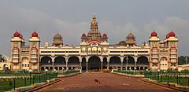
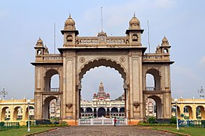
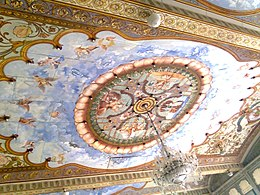
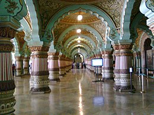
 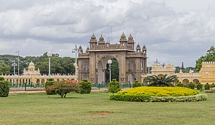
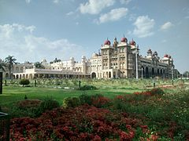
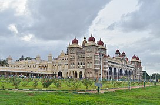
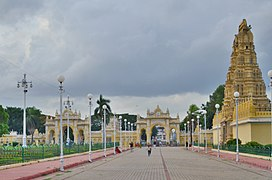
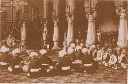
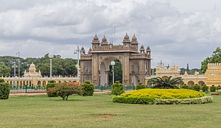
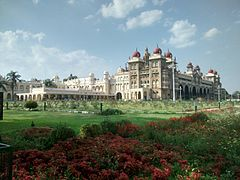
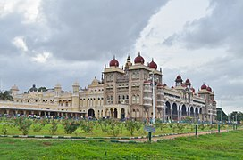
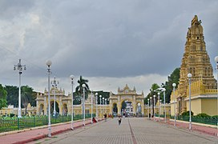
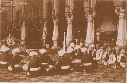
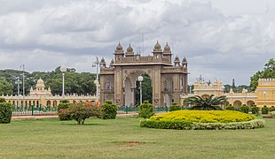
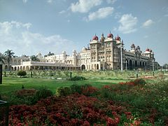
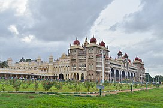
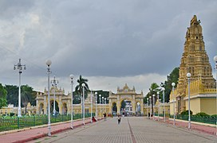
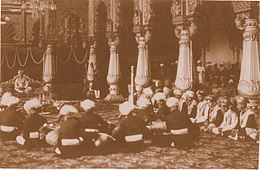
Developed By: Vineet Choudhary